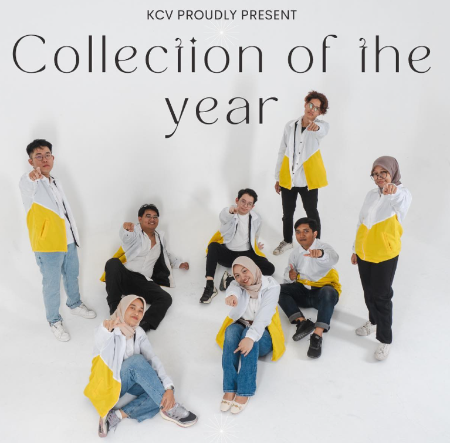

Welcome to KCV Laboratory
Best Place To Learn AI Application!

Covers techniques for processing and analyzing digital images for tasks like pattern recognition, image enhancement, and segmentation.
Focuses on statistical methods for analyzing data with multiple variables, including regression, factor analysis, and clustering.
Introduces methods to extract patterns and knowledge from large datasets, including classification, clustering, and association.
Applies computational techniques to biomedical problems, including signal processing, genomics, and AI for medical diagnosis.
Explores how computers interpret and understand visual information from images and video, covering object detection, tracking, and recognition.
Focuses on systems that retrieve relevant information from large datasets, such as search engines and databases.
Studies the design, control, and programming of robots, including motion control, sensors, and applications in automation.
Covers techniques for analyzing social media data, including sentiment analysis, trend detection, and other advanced topics in intelligent computing and vision.
You just see what does KCV Laboratory have Right Now!

Processor Intel Core i3 Gen-3, i5 Gen-8, Intel® Xeon® E5-2640 with RAM 4GB-16GB, Up to Processor i9 Gen 12 GPU 3080TI
For most HDDs the minimum is 1TB
All monitors measure 19″ to make it easier for students to conduct research and study
Equipped with a 55″ LED TV for students to carry out learning demonstrations
LCD Projector to make it easier for students who need multiple displays
Ploter Untung supports students' needs to print the results of the required assignments

Development of a Detection Method for Acute Lymphoblastic Leukemia (ALL) Subtypes in Microscopic Images of Blood Cells as a Tool for Diagnosing Leukemia Types
Development of an Automatic Medical Report Generation System Based on Medical Images
Adaptive Gamification System Development Model Framework to Increase the Effectiveness of Students' Final Assignments
Early Detection and Monitoring System for Complication Risk Based on Multimodal Deep Learning in Patients Undergoing Continuous Ambulatory Peritoneal Dialysis Therapy

Prof. Dr. Eng. Nanik Suciati, S.Kom, M.Kom
SCOPUS
G-SCHOLAR
SINTA
Prof. Dr. Eng. Chastine Fatichah, S.Kom, M.Kom
SCOPUS
G-SCHOLAR
SINTA
Prof. Ir. Handayani Tjandrasa ,M.Sc, Ph.D
SCOPUS
G-SCHOLAR
SINTA
Prof. Dr. Agus Zainal Arifin, S.Kom, M.Kom
SCOPUS
G-SCHOLAR
SINTA
Dini Adni Navastara, S.Kom, M.Sc
SCOPUS
G-SCHOLAR
SINTA
Aldinata Rizky Revanda, S.Kom., M.Kom.
SCOPUS
G-SCHOLAR
SINTA
Imam Mustafa Kamal, S.ST, Ph.D
SCOPUS
G-SCHOLAR
SINTA

Utilization of Information Technology to Improve the Quality of Learning at SD Yapita Surabaya
Utilization of Information Technology to Improve the Quality of Learning at SDN Sutorejo 1/240 Surabaya
Development of Branding of Areas Assisted by Islamic Boarding School Business Units (Koppontren) Towards Halal Certification in Bangkalan Regency
Utilization of Information Technology to Improve the Economy and Business Processes of MSMEs Kopontren Addimyathy Nurul Iman in Labang Bangkalan Madura
Copyright © 2022 EduWell Co., Ltd. All Rights Reserved.
Design: TemplateMo
Distribution: ThemeWagon